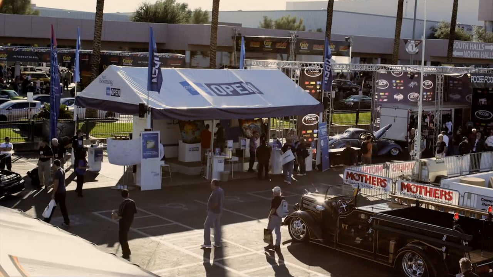

The Ones To Watch
Project
SEMA 2015 activation
Quote
We drove the car off the lot in the grand finale: the SEMA Parade of Cars.

- Client
- American Express OPEN
- Agency
- Momentum Worldwide
- Discipline
- Experiential, Digital & social, CRM & direct
- Sector
- Consumer
- What we made
- Sizzle reel; Event photography; Tombstones; Light boxes; Monitors; Acquisition touch screen; Email; Promotional collateral
- Recognition
- 3 Silver Stevies, 2016 American Business Awards; ACE Awards 2016: 1st, Event Marketing Integrated Campaign, and runner-up, Best Booth Experience
- Link 1
- Watch the film
- Link 2
- Watch the film
For this year's SEMA, AMEX wanted an activation that promotes small business. Our team, captained by Group Creative Director Phil Koutsis, sold our concept: a live artist collaboration at SEMA 2015 that would help promote a small local business, create a buzz at the show and drive acquisition.
We welcomed back two past Ones To Watch winners, Ryan Townsend and Scott MacKay, to transform a blank Ford Fiesta into a work of art for a local small business. Small-business attendees watching the activation could enter for a chance to win $500 in American Express gift cards by signing up for a new AMEX card designed for their business.
We searched the local businesses in Las Vegas and found Big Ern's BBQ, a small business that went from the local container park to opening his restaurant brand in a hotel chain. We worked with the artists on a design with the right balance of artistry and brand promotion. Marie Roberts, Brian Koneigsberg and I wrote, designed and produced all the integrated collateral. Scott and Ryan knocked the airbrush design out of the park. Big Ern was overwhelmed and hugged everyone involved, and not involved. And we drove the car off the lot in the grand finale: the SEMA Parade of Cars.